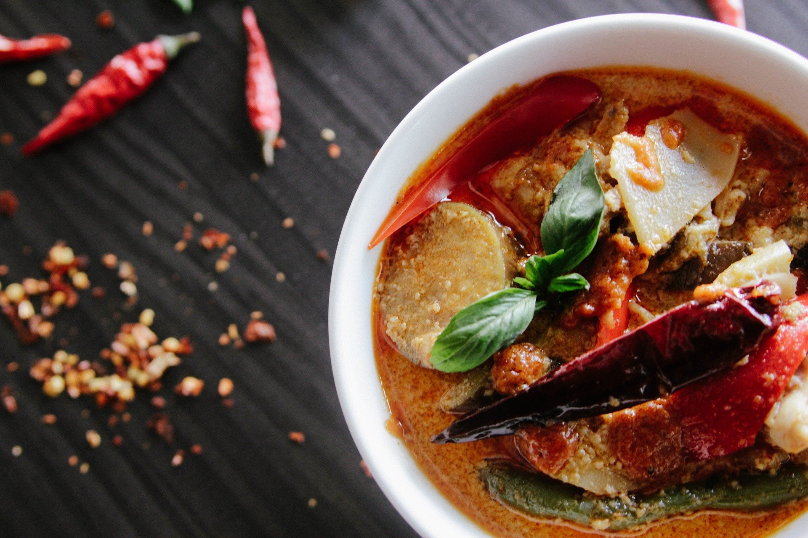

LUN-MER 11:00-22:30
Notre histoire
Le premier restaurant de la famille Olivia est situé dans les anciens et vénérables halls d'atelier d'Aker Brygge. Nous avons conservé le caractère historique des lieux; voici des plafonds solides et des murs de briques résistants - ce qui est parfaitement approprié au concept et à l'inspiration derrière ce restaurant particulier, à savoir Naples. Cela a un impact sur la pièce et l'intérieur. Toutes les cheminées et bougies contribuent également à créer l'atmosphère d'Olivia que nous connaissons si bien.
La salle à manger extérieure bénéficie d'un emplacement fantastique sur le quai avec vue sur le fjord et la forteresse d'Akershus. La zone est équipée de lampes chauffantes, couvertures, parapluies et auvents qui offrent une atmosphère chaleureuse et bonne, quelle que soit la météo. Les chaudes journées d'été, c'est l'endroit idéal pour dîner, avec vue sur la mer et la foule animée.
La salle à manger extérieure bénéficie d'un emplacement fantastique sur le quai avec vue sur le fjord et la forteresse d'Akershus. La zone est équipée de lampes chauffantes, couvertures, parapluies et auvents qui offrent une atmosphère chaleureuse et bonne, quelle que soit la météo. Les chaudes journées d'été, c'est l'endroit idéal pour dîner, avec vue sur la mer et la foule animée.

Plus qu'un héritage, un devoir
En mettant l'accent sur les ingrédients italiens, nous servons des pizzas, des pâtes et d'autres plats italiens - tous faits maison et avec un amour pour la cuisine italienne. Pizza italienne fine et croustillante frite dans un four en pierre, plats de pâtes classiques et antipasti - comme sur tous les menus de la famille Olivia. De plus, vous pouvez choisir parmi des plats de viande et de poisson servis comme les Italiens. Le restaurant dispose d'une cuisine ouverte afin que vous puissiez suivre les boulangers en action près du four en pierre.
Chez Olivia Aker Brygge, vous obtenez également un menu très spécial inspiré de la nourriture et des boissons napolitaines. Le chef Lukasz a lui-même voyagé et ramassé des recettes pour Menù Napoli, qui se compose de plats typiques de la région. En d'autres termes, vous pouvez obtenir un peu de Naples dans notre restaurant à Aker Brygge.
Chez Olivia Aker Brygge, vous obtenez également un menu très spécial inspiré de la nourriture et des boissons napolitaines. Le chef Lukasz a lui-même voyagé et ramassé des recettes pour Menù Napoli, qui se compose de plats typiques de la région. En d'autres termes, vous pouvez obtenir un peu de Naples dans notre restaurant à Aker Brygge.

Un espace intime
Bienvenue dans l'une des plus belles chambres séparées d'Oslo! Sala Privata est une pièce vitrée séparée avec un espace pour les fêtes fermées. Ici, nous pouvons tout organiser, des petits dîners intimes et informels et rencontrer jusqu'à 80 personnes. Nous avons notre propre entreprise et nos menus de réunion, mais surtout nous adaptons un événement qui offre une expérience italienne informelle, différente et authentique. La chambre ne coûte rien, vous ne payez que pour la nourriture et les boissons. Envoyez-nous une demande de réservation à booking@olivia.no.
À côté de Sala Privata a également une salle de vin séparée où nous pouvons organiser des dégustations de vin pour les petits et les grands groupes.
À côté de Sala Privata a également une salle de vin séparée où nous pouvons organiser des dégustations de vin pour les petits et les grands groupes.


Plus qu'un héritage, un devoir
En mettant l'accent sur les ingrédients italiens, nous servons des pizzas, des pâtes et d'autres plats italiens - tous faits maison et avec un amour pour la cuisine italienne. Pizza italienne fine et croustillante frite dans un four en pierre, plats de pâtes classiques et antipasti - comme sur tous les menus de la famille Olivia. De plus, vous pouvez choisir parmi des plats de viande et de poisson servis comme les Italiens. Le restaurant dispose d'une cuisine ouverte afin que vous puissiez suivre les boulangers en action près du four en pierre.
Chez Olivia Aker Brygge, vous obtenez également un menu très spécial inspiré de la nourriture et des boissons napolitaines. Le chef Lukasz a lui-même voyagé et ramassé des recettes pour Menù Napoli, qui se compose de plats typiques de la région. En d'autres termes, vous pouvez obtenir un peu de Naples dans notre restaurant à Aker Brygge.
Chez Olivia Aker Brygge, vous obtenez également un menu très spécial inspiré de la nourriture et des boissons napolitaines. Le chef Lukasz a lui-même voyagé et ramassé des recettes pour Menù Napoli, qui se compose de plats typiques de la région. En d'autres termes, vous pouvez obtenir un peu de Naples dans notre restaurant à Aker Brygge.
Contact
10 quai de Montebello,
75005 Paris
75005 Paris
01 09 56 27 96
contact@dame-de-coeur.fr
contact@dame-de-coeur.fr
Horraires d'ouverture et évènements
JEU-VEN 11:00–00:00
SAM 12:00–23:30
DIM 12:00–22:30
REVEILLON DE NOEL
23. DECENBRE : 11:00–17:00
24. — 25. DECEMBRE : FERME
26. — 30. DECEMBRE : 12:00–23:00
NOUVEL AN
31. DECEMBRE: 11:30–00:30
1. JANVIER : 12:00–23:00